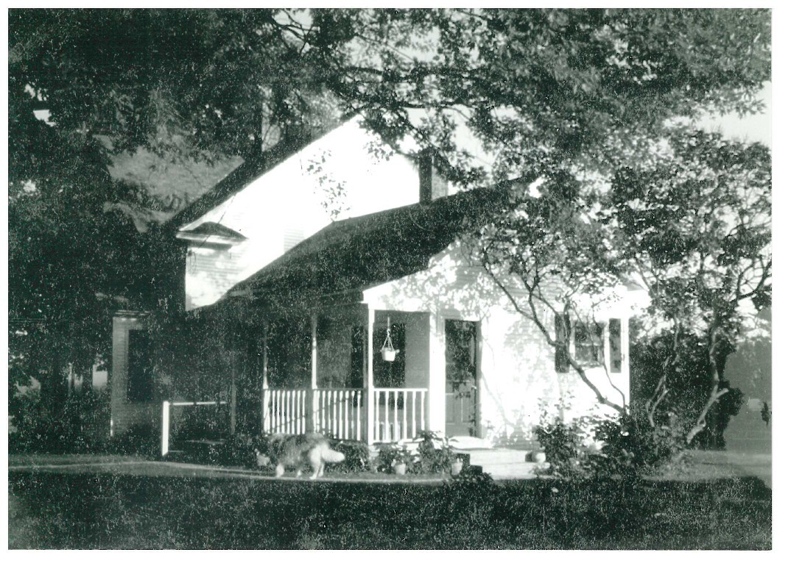

Rooted in West Michigan Since 1907
Country Dairy's story began in the 1880s when Andrew Van Gunst immigrated from the Netherlands to West Michigan as a young boy. Through hard work, perseverance, and a deep faith in this land, Andrew and his wife Jane purchased 80 acres in New Era, Michigan in 1907, starting the farm that would become Country Dairy.
Through generations of early mornings, hard seasons, and a stubborn love for the life of farming, that original 80 acres has grown into something much bigger: a Michigan Centennial Farm, a working dairy of over 1,200 Holstein cows, and one of West Michigan's most beloved family destinations.
Today, the fifth generation of the Van Gunst family carries that same spirit forward, not just as farmers but as hosts. Every farm tour, every scoop of ice cream, and every meal served at our Farm Kitchen is an invitation to share in something that has taken more than a century to build.
"A person cannot dream of something different if they have never seen it."
Wendell Van Gunst, who built Country Dairy's on-farm processing plant in 1983, transforming the farm into the vertically integrated dairy it is today